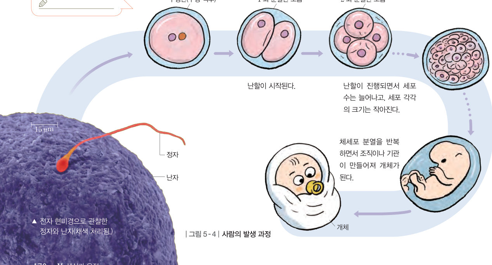
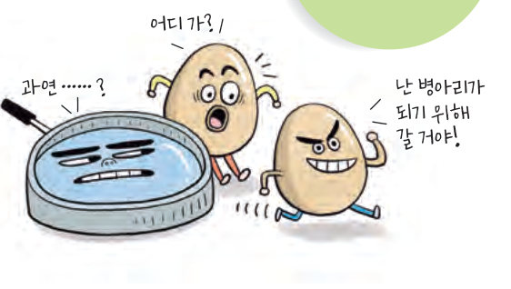
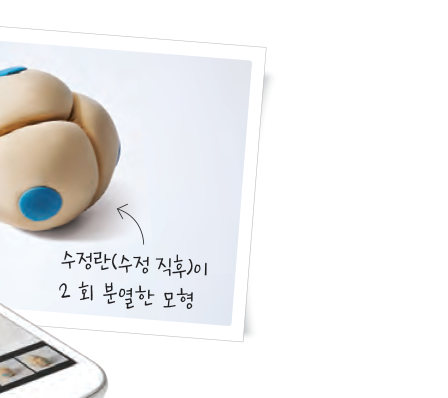

달걀이 병아리가 되기까지 어떤 과정을 거칠까? 난할 현미경으로 분열 횟수를 늘리며 세포 수는 늘고 세포 하나의 크기는 작아지는 모습을 그래프로 확인하고, 수정란이 사람이 되는 발생 과정을 정리해 보자.
정자와 난자가 수정하면 수정란이 된다. 정자와 난자는 각각 염색체 수가 체세포의 절반이므로, 수정란은 체세포와 염색체 수가 같다.
수정란은 체세포 분열을 반복하면서 세포 수를 늘리고, 조직과 기관이 발달하여 개체가 된다. 수정란은 초기에 세포 분열을 빠르게 반복하는데, 이를 난할이라고 한다. 난할은 체세포 분열이지만 분열 후 생긴 딸세포의 크기가 커지지 않고, 세포 분열을 빠르게 반복하는 특징이 있다. 따라서 난할이 진행되면 세포 수가 늘어나고, 세포 각각의 크기는 점점 작아진다.
수정란이 난할을 거쳐 일정한 시기가 되면 세포 분열 속도가 느려지면서 일반적인 체세포 분열이 일어난다. 그리고 체세포 분열이 반복되어 세포 수가 늘어나면서 여러 조직이나 기관이 형성되어 개체가 된다. 이와 같이 수정란이 세포 분열을 하면서 여러 과정을 거쳐 개체가 되는 것을 발생이라고 한다.

| ⑴ 난할은 체세포 분열에 해당한다. | |
| ⑵ 난할 결과 세포의 염색체 수는 점점 줄어든다. | |
| ⑶ 난할이 진행되면 세포 수가 늘어나고, 세포 각각의 크기는 점점 커진다. | |
| ⑷ 분열 후 생긴 딸세포의 크기가 커지지 않고, 세포 분열을 빠르게 반복한다. |
| 평가 기준 | 스스로 평가 |
|---|---|
| 수정란이 개체로 발생하는 과정을 설명할 수 있다. | |
| 난할의 특징을 세포 수와 크기로 설명할 수 있다. |